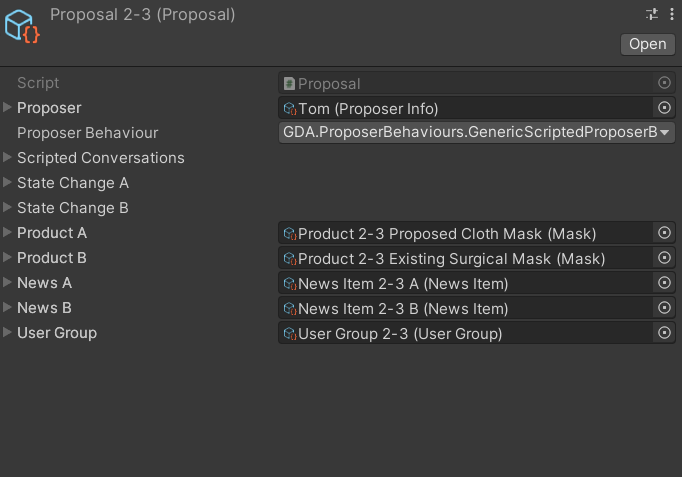
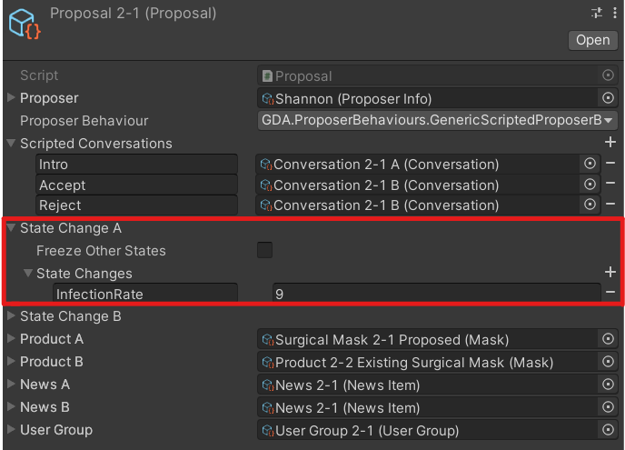

The Proposal Scriptable Object
In game, each gameplay loop is defined in a single Proposal ScriptableObject, which is essentially a .asset file containing the information needed for a single gameplay loop. Some of this information are themselves scriptable objects, which will be introduced later.

A Proposal scriptable object consists of:
Proposer- a ProposerInfo scriptable object that determines which NPC is making the proposalProposer Behaviour- a reference to a ProposerBehaviour script which governs how an NPC would actionScripted Conversations- a dictionary/table of Conversations** to be used by the ProposerBehaviour mentioned aboveState Change A/State Change B- Optional predefined state changes applied to the game state when a player accepts (StateChangeA applied) or rejects (StateChangeB applied) a proposal.Product A/Product B- Product Scriptable Objects which are the proposed product and the existing product respectively.News A/News B- Optional NewsItem scriptable objects, which are the news articles that appear in the game depending on whether a player accepts (NewsA) or rejects (NewsB) a proposal.User Group- a UserGroup scriptable object, which describes the beneficiary of the proposal (who the proposal is for).
The ProposerBehaviour Reference
In each proposal, the NPC follows a behaviour that is coded into a C# class named ProposerBehaviour. For special behaviours, a new C# class needs to written to extend the base ProposerBehaviour class, and then referenced in the Proposal ScriptableObject. To see the currently available behaviours, see [Current Proposer Behaviours](xref: currentProposerBehaviours.md).
Predefined State Changes
Usually the changes to the game state will be calculated automatically by the game when a player makes a decision on a proposal. It is however, possible to override this calculation with predefined state changes. This is useful for various reasons (e.g. story events) in the game.

A dictionary/table is used to define the state changes.
Each entry consists of:
- The name of the GameStateProperty to be changed
- The amount to be changed, a positive/negative value denoting an increase/decrease respectively.
Note
The name of the GameStateProperty can be any string, so long as it is same as in the GameState
Additionally, if Freeze Other States is selected, then all the other game state properties not included in the predefined state changes will be frozen and not changed for that particular proposal. If left unchecked, then all game state properties not included in the predefined changes will have their changes calculated as per usual.
Internally Calculated Quantity
Given information of the products and the user group, the proposal script calculates the quantity of each product that is required for the user group.
For each product, the Proposal Scriptable Object tries to find product property named "Uses" and "UsageCapacity" for each product. Uses indicates how many times the product can be used before it should be disposed. Usage Capacity indicates the "load" that the product can take per use. If not found, the product is assumed to have unlimited uses and unlimited capacity resepectively.
For the user group, the Proposal Scriptable Object tries to find a detail named "UsageRequirement". This represents the requirements per user in the user group. If not found, it be assumed that one user only needs 1 product each.
The quantity of product A/B needed is then calculated like this:
Quantity = User Group Size * Usage Requirement / Uses / Usage Capacity)
Example 1
A washable cloth mask can be used 30 times, but needs 1 day to wash and dry. This essentially means the "capacity" of the cloth mask is halved.Uses = 30, UsageCapacity = 0.5
For a group of 300 people that need to use masks for 30 days,
User Group Size = 300, UsageRequirement = 30
Total Quantity of cloth masks needed is then calculated as such:
Quantity = User Group Size * Usage Requirement / Uses Quantity = 300 * 30 / 30 / 0.5 = 600
Example 2
A surgical mask can be only be used once. But does not have restrictions on usage.Uses = 30
For a group of 300 people that need to use masks for 30 days,
User Group Size = 300, UsageRequirement = 30
Total Quantity of cloth masks needed is then calculated as such:
Quantity = User Group Size * Usage Requirement / Uses
Quantity = 300 * 30 / 1 = 9000